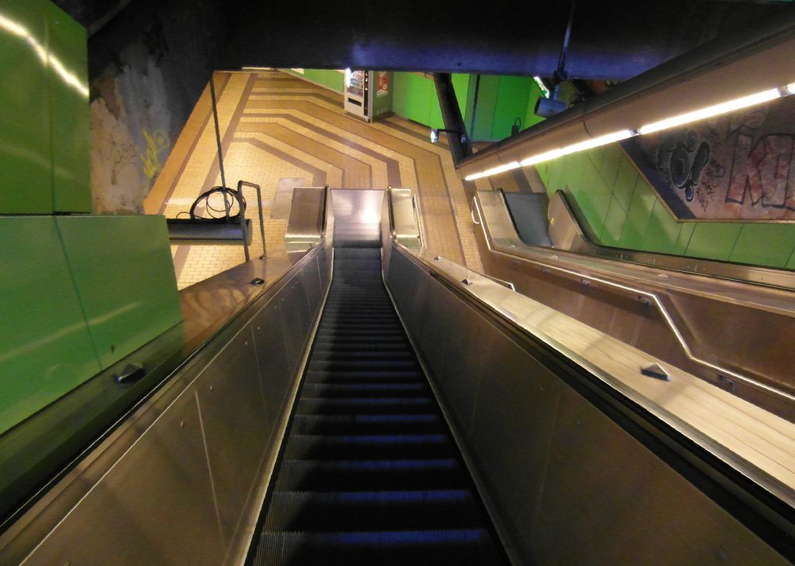
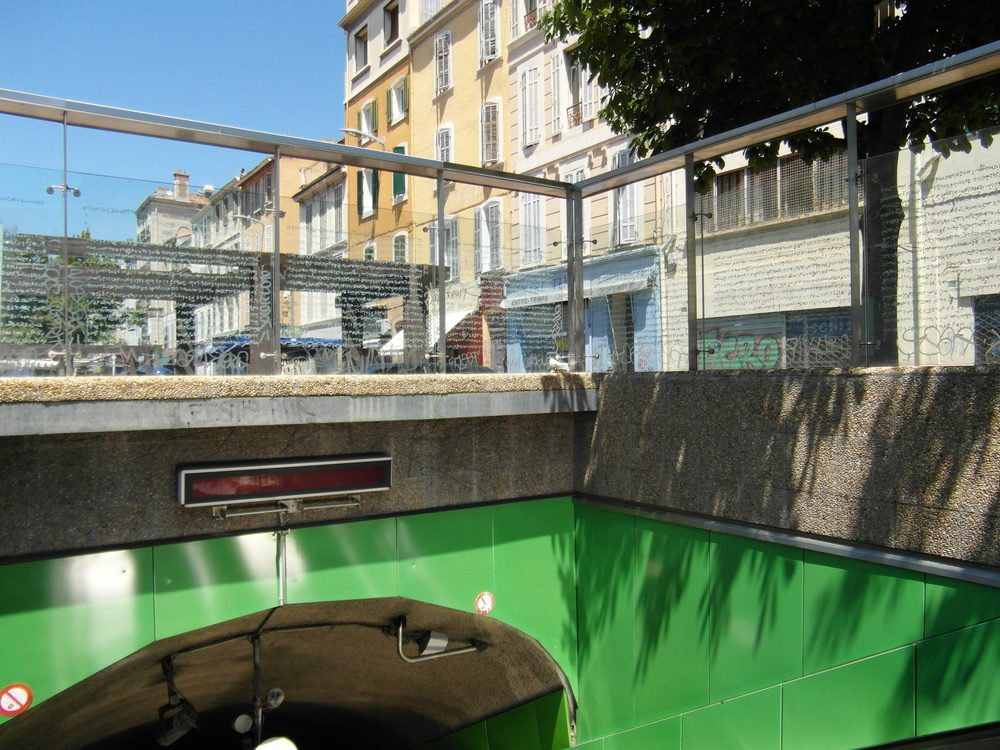
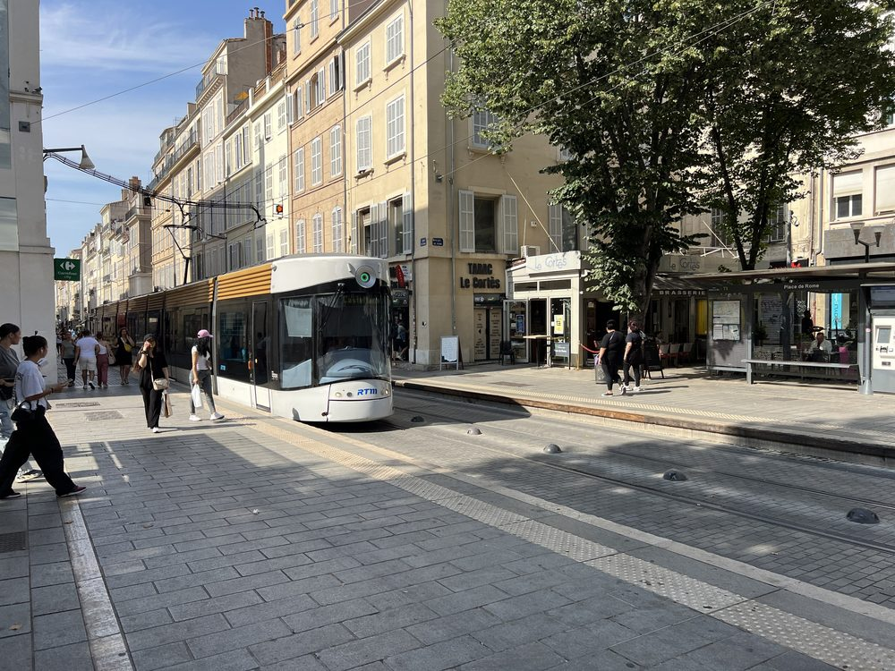
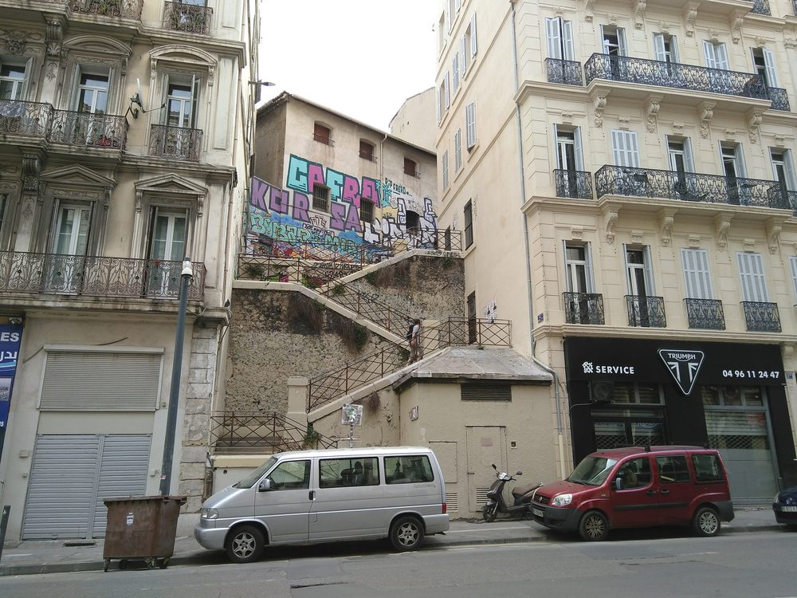
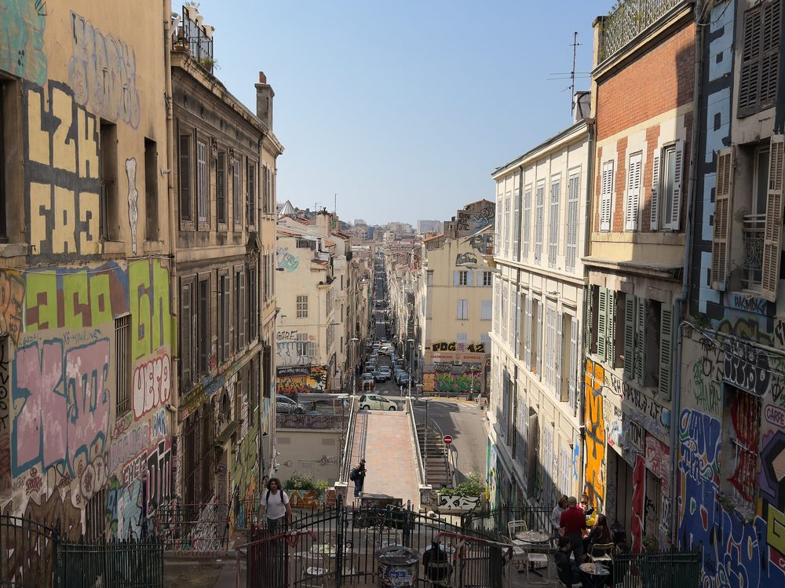
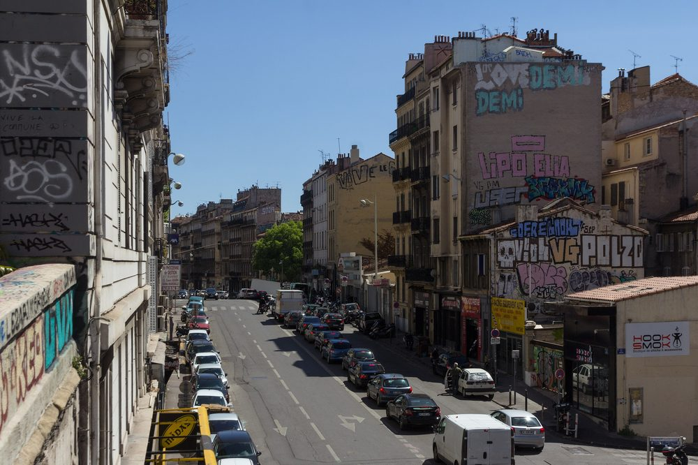

Le Cours Julien est perché sur une colline, en plein centre de Marseille, à dix minutes à pied du Vieux-Port. Le plus simple, c’est le métro, qui s’arrête au pied du quartier. Mais les plus curieux arriveront par les escaliers.
En métro,
ligne 2
La station s’appelle Notre-Dame-du-Mont – Cours Julien, sur la ligne 2 du métro de Marseille. En sortant, vous êtes au cœur du quartier : le Cours Julien, la place Notre-Dame-du-Mont et le grand escalier sont à deux minutes.
Depuis la gare Saint-Charles, c’est direct : prenez la ligne 2 direction Sainte-Marguerite Dromel. Notre-Dame-du-Mont est la deuxième station, juste après Noailles. Depuis l’aéroport, la navette va jusqu’à la gare Saint-Charles ; il ne reste ensuite que ces deux stations de métro.


La station Notre-Dame-du-Mont – Cours Julien · IngolfBLN, CC BY-SA 2.0
Le tram,
puis les escaliers
La ligne de tramway T3 remonte toute la rue de Rome, juste en bas du quartier. Descendez à l’un de ses arrêts, entre Noailles et Castellane, puis montez à pied. Il faut compter cinq à dix minutes, et quelques marches.
C’est la plus belle façon d’arriver. Par le cours Lieutaud et l’escalier de la rue Armand-Bédarride, construit vers 1864 et couvert de graffitis, ou par les rues qui grimpent vers le Cours Julien, on découvre le quartier comme il s’est construit : en pente, en marches, en murs peints.

Le tram T3, rue de Rome · Chabe01, CC BY-SA 4.0


L’escalier Bédarride · Francesca Ubelka, CC BY-SA 4.0 · Le grand escalier du Cours Julien · Mike is Michi, CC BY-SA 4.0
En bus
74
Arrêts Notre-Dame-du-Mont et Trois-Frères-Barthélémy, au cœur du quartier.
81
Arrêts Notre-Dame-du-Mont et Lieutaud – Cours Julien.
54
Dessert aussi le quartier.
Avant de partir
Itinéraires, horaires et tarifs sur le site et l’application de la RTM.
Un même ticket RTM vaut pour le métro, le tram et le bus, avec correspondances.
À pied
Depuis le Vieux-Port, comptez une dizaine de minutes : remontez la Canebière, puis prenez à droite vers Noailles et les rues qui montent au Cours Julien. Depuis Noailles, c’est cinq minutes. Depuis Castellane, un petit quart d’heure par la rue de Rome.
Le quartier, lui, se visite uniquement à pied. Les rues sont étroites, souvent piétonnes, et pleines d’escaliers. Prévoyez de bonnes chaussures.

Le cours Lieutaud, au pied du quartier · Alexey Komarov, CC BY-SA 4.0
Voiture, vélo
En voiture, on vous le déconseille : les rues sont étroites, souvent en sens unique, et se garer relève de l’exploit, surtout le soir. Le plus simple est de laisser la voiture dans un parking du centre-ville ou dans un parking relais, puis de finir en métro.
À vélo, c’est possible, mais le quartier est sur une colline : la montée se mérite. Un vélo à assistance électrique aide beaucoup.
Où dormir
Pas besoin de dormir au Cours Ju pour en profiter. Le quartier compte peu d’hôtels, mais il est à quelques minutes à pied ou en métro de Noailles, du Vieux-Port, du Panier et de la gare Saint-Charles. Le Mama Shelter, rue de la Loubière, est le plus proche.
Hôtels de charme, auberges de jeunesse, conseils pour choisir son quartier : nos adresses, avec photos et liens vers les sites officiels, sont dans le Mag.
Quelle station de métro pour le Cours Julien ?
La station Notre-Dame-du-Mont – Cours Julien, sur la ligne 2 du métro de Marseille.
Comment aller au Cours Julien depuis la gare Saint-Charles ?
Prenez la ligne 2 du métro à Saint-Charles, direction Sainte-Marguerite Dromel : Notre-Dame-du-Mont – Cours Julien est la deuxième station, après Noailles. Comptez une dizaine de minutes.
Peut-on aller au Cours Julien à pied depuis le Vieux-Port ?
Oui, en une dizaine de minutes, en remontant la Canebière puis les rues du quartier. La fin du trajet grimpe un peu.
Où dormir près du Cours Julien ?
Le Mama Shelter est à quelques minutes à pied. Sinon, les hôtels et auberges de jeunesse de Noailles, du Vieux-Port, du Panier et de Saint-Charles sont à 10 à 20 minutes à pied ou en métro. Nos adresses sont dans l’article Où dormir près du Cours Ju.
Photos : kallerna, IngolfBLN, Chabe01, Francesca Ubelka, Mike is Michi, Alexey Komarov, via Wikimedia Commons.